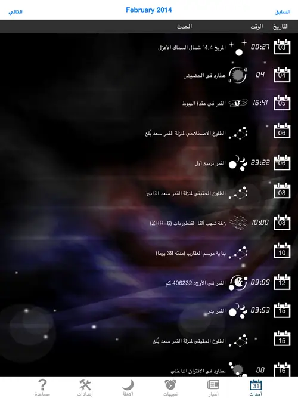
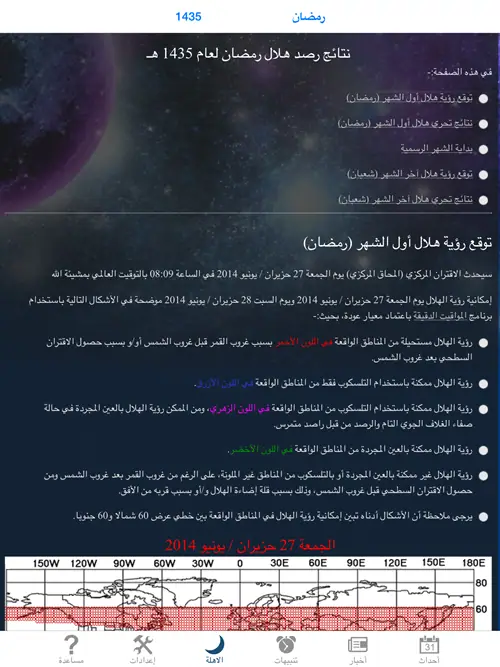
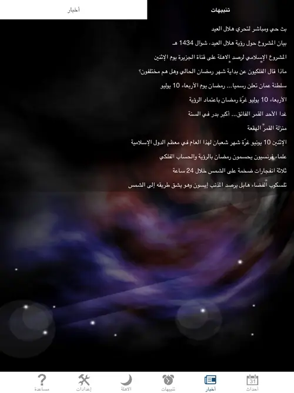
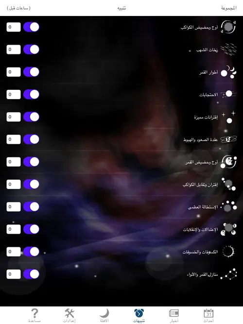
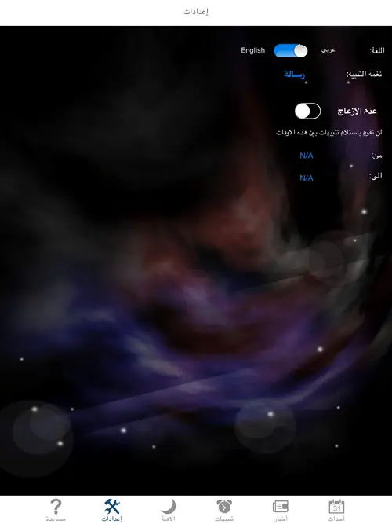

أخبار علمية ·
Astronomy Events
لا تدع حدثا فلكيا مميزا يفوتك بعد الآن! هذا التطبيق لا يعرض الأحداث الفلكية فحسب، بل يقوم بإرسال إشعار فوري عند وقوع الحدث، ويقدم شرحا مبسطا حول الحدث الفلكي عندما يضغط المستخدم على الحدث. ويحتوي التطبيق على صفحة للأخبار الفلكية الهامة، كما يقوم البرنامج بإرسال إشعار فوري للمستخدم عند وجود خبر فلكي هام، مثل ثبوت رؤية الهلال في بلد ما أو إعلان إحدى الدول لأول أيام عيد الفطر السعيد. كما أنه توجد قائمة خاصة لرؤية الهلال يمكن من خلالها الاطلاع على إمكانية رؤية الهلال ومعرفة نتائج رصد الهلال من قبل الراصدين في مختلف دول العالم. الأحداث الفلكية التي يحتويها هذا التطبيق ويقوم بإرسال إشعار فوري لها هي:
- أطوار القمر
- الكسوفات والخسوفات
- أوج وحضيض القمر
- زخات الشهب
- منازل القمر والأنواء
- مرور القمر بجانب كوكب أو نجم لامع
- اقترانات مميزة
- اقتران وتقابل الكواكب
- أوج وحضيض الكواكب
- حضيض المذنبات
- الاستطالة العظمى للكواكب
- عقدة الصعود والهبوط للكواكب
- احتجابات الكواكب والنجوم والكويكبات خلف القمر
- الاعتدالات والانقلابات
دليل الاستخدام
صفحة الأحداث الفلكية: تعرض هذه الصفحة أهم الأحداث الفلكية خلال الشهر الميلادي، وبشكل تلقائي تظهر أحداث الشهر الحالي. الخانة الأولى هي تاريخ الحدث بالتقويم الميلادي، والخانة الثانية هي ساعة وقوع الحدث، والمواقيت معطاة بالتوقيت المحلي حسب النطاق الزمني للهاتف. ويمكن التقليب بين الأشهر من خلال الضغط على الأسهم الموجودة في رأس الصفحة. وعند الضغط على الحدث، تظهر صفحة جديدة تقدم شرحا مبسطا حول الحدث الفلكي المختار.

صفحة الأهلة: ترتبط هذه الصفحة بموقع المشروع الإسلامي لرصد الأهلة، بحيث تعرض إمكانية رؤية الهلال للأشهر المقبلة، كما أنها تعرض نتائج تحري الهلال المرسلة من قبل أعضاء المشروع والمنتشرين في مختلف دول العالم. ويمكن الاطلاع على نتائج رصد الهلال منذ تأسيس المشروع عام 1998م لغاية أشهر السنة الهجرية الحالية. وتتطلب هذه الصفحة أن يكون المستخدم متصلا بشبكة الإنترنت.

صفحة الأخبار الفلكية: تحتوي هذه الصفحة على أخبار فلكية تضاف بين الحين والآخر، وهذه الصفحة تتحدث تلقائيا بمجرد الدخول إليها. تنقسم هذه الصفحة إلى قسمين: القسم الأول هو الأخبار، وبالضغط على الخبر يمكن قراءة التفاصيل. والقسم الثاني هو الإشعارات، وهي عبارة عن رسائل قصيرة تحتوي معلومة قصيرة ترسل بين الحين والآخر.

صفحة التنبيهات: تصنف الأحداث الفلكية في هذا التطبيق ضمن مجموعات رئيسة، وصفحة التنبيهات تتيح الخيار للمستخدم باختيار الأحداث الفلكية التي سيصله رسالة تنبيه عند وقوعها، فإذا لم يرغب المستخدم باستلام تنبيه لمجموعة معينة من الأحداث فما عليه إلا أن يطفئ خيار التنبيه لهذه المجموعة من صفحة التنبيهات. وكذلك تتيح هذه الصفحة الخيار للمستخدم أن يستلم التنبيه قبل وقوع الحدث بعدد معين من الساعات، فإذا أدخل المستخدم الرقم 3 مثلا في الخانة المخصصة لذلك، فإن إشعار التنبيه سيصله قبل 3 ساعات من وقوع الحدث بالنسبة لجميع أحداث تلك المجموعة.

صفحة الإعدادات: تتيح هذه الصفحة الخيار للمستخدم أن يختار بين اللغة العربية والإنجليزية، وعند تغيير اللغة فإن البرنامج سيغلق بشكل تلقائي، وينبغي على المستخدم إعادة تشغيله. وكذلك تتيح هذه الصفحة للمستخدم أن يختار نوع النغمة التي سيسمعها عند وقوع الحدث، كما أنها تتيح للمستخدم تحديد وقت معين من اليوم (غالبا مساء) يتوقف البرنامج خلالها عن إرسال التنبيهات.

- الإشعارات الفورية: من ميزات هذا التطبيق هي وصول إشعارات فورية للمستخدم عند إضافة خبر جديد لصفحة الأخبار، أو وصول إشعارات فورية للمستخدم عند وجود خبر هام، مثل ثبوت رؤية الهلال في إحدى الدول، أو الإعلان الرسمي لدولة ما حول بداية عيد الفطر وما شابهها من الأخبار والأحداث الفلكية الهامة. ويمكن تفعيل أو إلغاء هذا الخيار من قائمة الإشعارات الموجودة في إعدادات الجهاز، وليس من داخل التطبيق.
تحميل التطبيق: للآيفون والأيباد، يرجى الضغط على هذا الرابط لتحميل التطبيق. للأندرويد، يرجى الضغط على هذا الرابط لتحميل التطبيق.
ملاحظات
- ننصح المستخدمين الذين يجيدون اللغة العربية بتغيير لغة البرنامج إلى اللغة العربية، حيث إن هناك مجموعة من الأحداث لا تظهر إلا باللغة العربية، وهي منازل القمر والأنواء، وتعرض هذه المجموعة مواعيد طلوع منازل القمر كما كانت معروفة وقت العرب القدامى، وتعرض كذلك مواعيد طلوع المنازل الحقيقية كما ترى الآن في زماننا الحاضر.
- عند تحميل البرنامج من متجر آبل فإن نمط الإشعار الذي يصلك يكون “شعارات” (Banners) وهذا النوع من الإشعارات قد لا تنتبه له، لذا ننصح المهتمين بتحويل نوع الإشعارات إلى “تنبيهات” (Alerts)، وذلك من خلال الطريقة التالية: اذهب إلى إعدادات الجهاز (Settings)، ومن ثم اختر “الإشعارات” (Notifications) ثم اختر البرنامج Astro Events ثم حول نمط التنبيه إلى “تنبيهات” (Alerts).